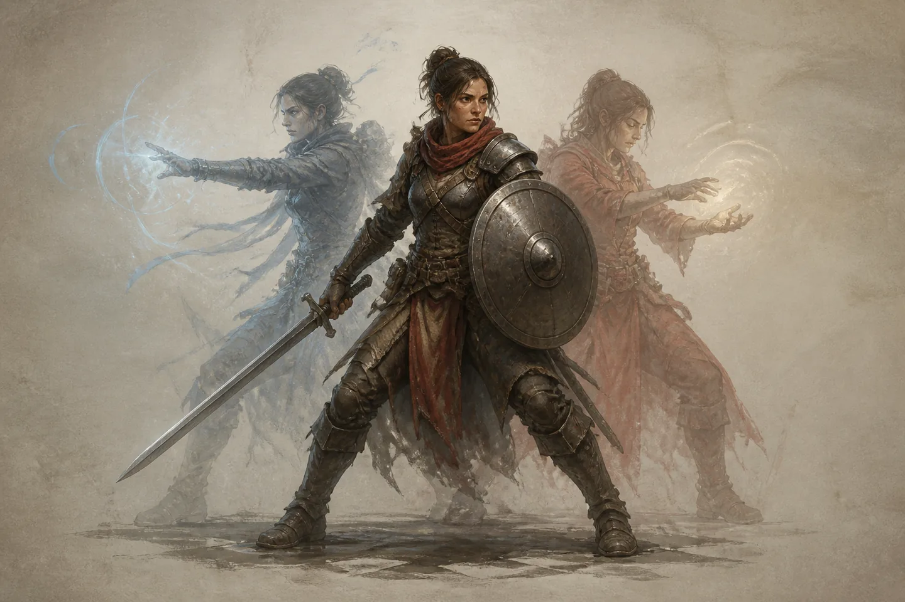
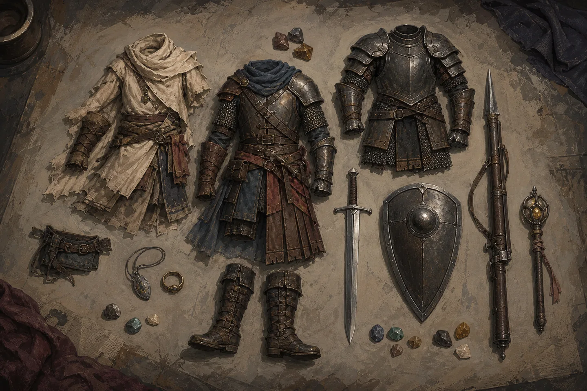
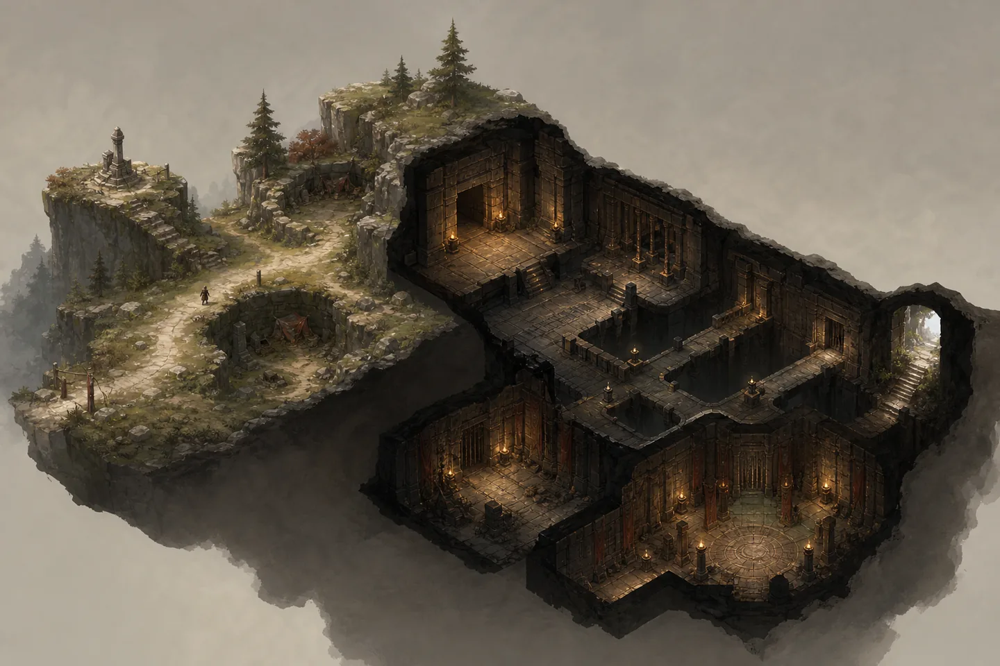

Practice changes performance
Weapon and defense skills improve through relevant use within level-band caps. New eligible weapons start at a competent floor; mastery adds an edge rather than repairing a broken baseline.
Mechanics, progression, and play structure
A systems-only view of how characters grow, fight, travel, and take on content.
01 Design rules
The current direction rewards preparation and practice while keeping every required activity possible for one well-built character.
Weapon and defense skills improve through relevant use within level-band caps. New eligible weapons start at a competent floor; mastery adds an edge rather than repairing a broken baseline.
The primary class is permanent. Subclass changes and advancement resets happen at safe locations and carry a meaningful in-game cost.
Every required encounter is designed for solo completion. Grouping increases difficulty and rewards instead of unlocking mandatory roles.
02 Build architecture
Every character combines three distinct classes. Slot order matters: the primary defines the character, the secondary fills a real gap, and the tertiary adds a narrow final option.

Primary
Secondary
Tertiary
ordered combinations in the six-class first slice: 6 primary × 5 secondary × 4 tertiary.
| Class | Primary role | Resource | Borrowed value |
|---|---|---|---|
| Holder | Mitigation tank | Energy | Defensive cooldown + passive mitigation |
| Reaver | Lifesteal tank | Energy + HP | On-hit leech + burst self-heal |
| Warder | Shield tank | MP | Absorb cooldown + minor passive ward |
| Mender | Reactive healer | MP | Burst self-heal |
| Binder | Lockdown support | MP | Hard control or brief slow / interrupt |
| Kindler | Burst damage | MP | High-impact or lighter burst attack |
03 Power and expression
Builds combine practiced execution, equipped statistics, and points that reshape class abilities. Keeping those lanes separate prevents one system from selling the same power twice.
Improve weapon mastery and active defensive execution through practice.
Supplies offense, defense, control, sustain, utility, and proc strength.
Changes ability cost, reach, riders, timing, targeting, and behavior.
One shared point pool
Every class follows the same structural skeleton: four incremental spine lines, two situational choice nodes, and one primary-only capstone fork. Secondary and tertiary slots stop at shallower depth ceilings.
Choice nodes are sidegrades, not obvious upgrades. They change when an ability is best—single target versus spread, burst versus sustained, reactive save versus maintained channel.
Universal resource set
A three-class build uses the union of the pools its abilities require. Extra bars create options, not simultaneous actions.
Ability and class labels are working descriptors, not final names.
Holder · mitigation
Reaver · lifesteal
Warder · shields
Mender · reactive heal
Binder · lockdown
Kindler · burst
04 Itemization
Subclasses never unlock heavier armor or new weapon types. Instead, eligible items can carry functional statistics that strengthen abilities from any slot.

A primary can wear its own tier or anything lighter, never heavier.
Eligibility stays per type; use-trained skill and augment compatibility follow the group.
Offense, defense, control, sustain, and utility replace a classic attribute layer.
Strongest expression of primary identity and authored specialization.
Fixed, pre-authored combinations that intentionally support cross-role builds.
A broad seven-to-eight-slot canvas with lower per-stat ceilings.
Limited correction or sharpening; always weaker than the same stat authored on gear.
Augment rules
Compatible augments install or replace while out of combat for currency or one prepaid service token. Replaced augments survive. Intact removal uses a settlement service. Rare multi-family augments gain flexibility, not extra power.
05 Stakes
Encounters emphasize target choice, positioning, active defense, resource timing, retreat, and preparation. The authoritative server resolves outcomes; the client presents and predicts without owning persistent results.
Observe enemy behavior, route risk, and control windows before committing.
Spend HP, MP, Energy, cooldowns, and positioning against a specific threat.
Retreat, change equipment emphasis, practice skills, or reshape ability choices.
Death model
Early levels have a no-loss grace band. Above it, death removes a fixed percentage of the current level's experience and can lower the character's level. Exact thresholds and percentages are still tuning.
De-leveling is soft: earned abilities and items remain usable, while level-scaled statistics and skill caps fall. Banked advancement points are never lost.
06 World structure
Open regions are not universally scaled into guaranteed fairness. Zone boundaries, streaming, maps, weather, and final navigation tools remain open, but discovery-driven travel and dungeon access already have firm rules.

01
Its position is fixed for everyone, hidden in a meaningful location, and activated by standing on it.
Account-wide discovery, costs, and cooldowns: TBD02
An instance waypoint works only after entering normally. It cannot bypass the entrance from outside.
Checkpoint and instance-persistence rules: TBD03
Lower dungeons unlock through discovery; higher ones use access quests. Every participating account needs its own unlock.
The level boundary between those methods: TBDExploring dungeon template
The first dungeon plan tests a repeatable pacing structure rather than a final content formula. Themes and enemies can change while the mechanical rhythm remains readable.
07 Participation
Ordinary open-world enemies never scale with party size. Scaling belongs only to dungeons and explicitly designated bosses, where real participation—not party membership or one-hit tagging—drives enrollment.
Ordinary enemies
Designated encounters
Damage, heal, protect, control, or hold attention.
A brief action alone is not enough for credit.
Sustained role-aware participation raises the tier.
Difficulty cannot fall until the full encounter resets.
Still to resolve